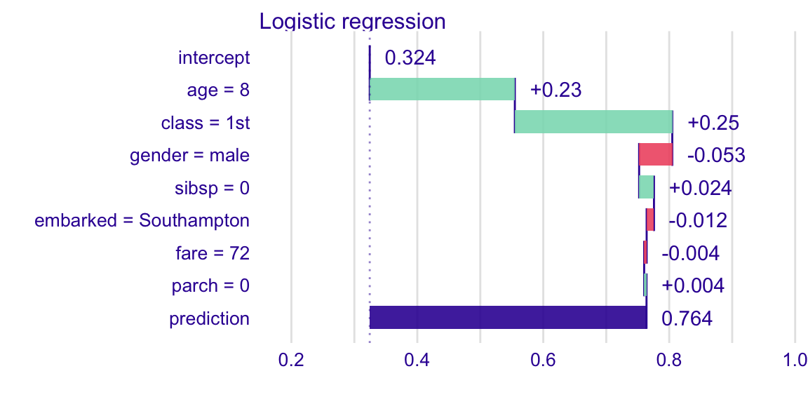
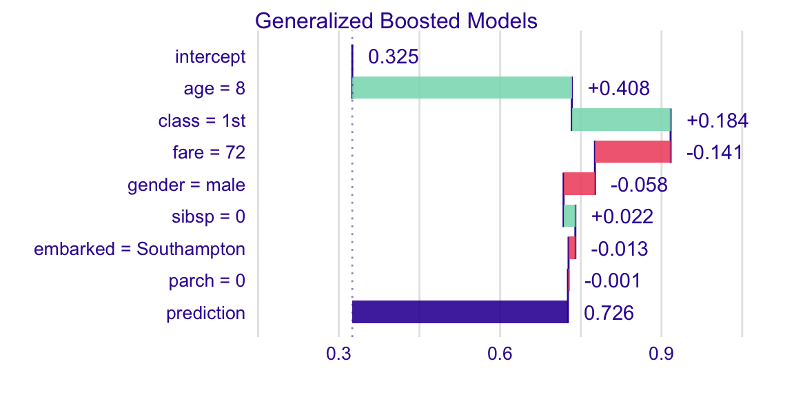
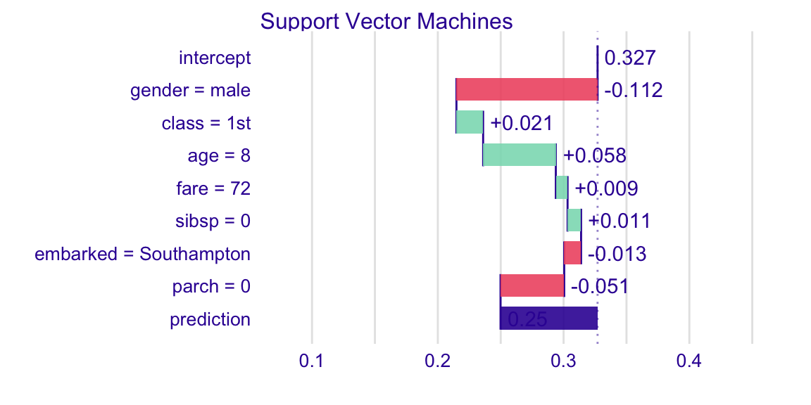
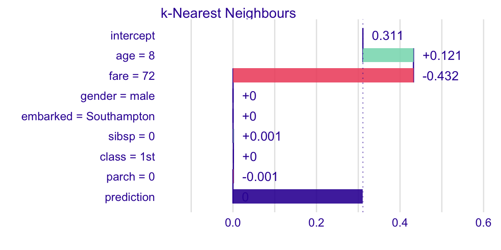

Survival on the RMS Titanic
Przemyslaw Biecek
2020-02-19
Source:vignettes/vignette_titanic.Rmd
vignette_titanic.RmdData for Titanic survival
Let’s see an example for DALEX package for classification models for the survival problem for Titanic dataset. Here we are using a dataset titanic avaliable in teh DALEX package. Note that this data was copied from the stablelearner package.
#> gender age class embarked country fare sibsp parch survived
#> 1 male 42 3rd Southampton United States 7.11 0 0 no
#> 2 male 13 3rd Southampton United States 20.05 0 2 no
#> 3 male 16 3rd Southampton United States 20.05 1 1 no
#> 4 female 39 3rd Southampton England 20.05 1 1 yes
#> 5 female 16 3rd Southampton Norway 7.13 0 0 yes
#> 6 male 25 3rd Southampton United States 7.13 0 0 yesModel for Titanic survival
Ok, not it’s time to create a model. Let’s use the Random Forest model.
# prepare model
library("randomForest")
titanic <- na.omit(titanic)
model_titanic_rf <- randomForest(survived == "yes" ~ gender + age + class + embarked +
fare + sibsp + parch, data = titanic)
model_titanic_rf#>
#> Call:
#> randomForest(formula = survived == "yes" ~ gender + age + class + embarked + fare + sibsp + parch, data = titanic)
#> Type of random forest: regression
#> Number of trees: 500
#> No. of variables tried at each split: 2
#>
#> Mean of squared residuals: 0.1427348
#> % Var explained: 34.88Explainer for Titanic survival
The third step (it’s optional but useful) is to create a DALEX explainer for random forest model.
library("DALEX")
explain_titanic_rf <- explain(model_titanic_rf,
data = titanic[,-9],
y = titanic$survived == "yes",
label = "Random Forest v7",
colorize = FALSE)#> Preparation of a new explainer is initiated
#> -> model label : Random Forest v7
#> -> data : 2099 rows 8 cols
#> -> target variable : 2099 values
#> -> model_info : package randomForest , ver. 4.6.14 , task regression ( default )
#> -> predict function : yhat.randomForest will be used ( default )
#> -> predicted values : numerical, min = 0.01116372 , mean = 0.3242797 , max = 0.992161
#> -> residual function : difference between y and yhat ( default )
#> -> residuals : numerical, min = -0.7900787 , mean = 0.0001604696 , max = 0.9105132
#> A new explainer has been created!Variable importance plots
Use the variable_importance() explainer to present importance of particular features. Note that type = "difference" normalizes dropouts, and now they all start in 0.
vi_rf <- variable_importance(explain_titanic_rf)
head(vi_rf)#> variable mean_dropout_loss label
#> 1 _full_model_ 109.4163 Random Forest v7
#> 2 country 109.4163 Random Forest v7
#> 3 parch 116.7250 Random Forest v7
#> 4 sibsp 118.2860 Random Forest v7
#> 5 embarked 120.8756 Random Forest v7
#> 6 fare 138.6565 Random Forest v7plot(vi_rf)
Variable effects
As we see the most important feature is Sex. Next three importnat features are Pclass, Age and Fare. Let’s see the link between model response and these features.
Such univariate relation can be calculated with variable_effect().
Age
Kids 5 years old and younger have much higher survival probability.
vr_age <- variable_effect(explain_titanic_rf, variables = "age")
head(vr_age)#> Top profiles :
#> _vname_ _label_ _x_ _yhat_ _ids_
#> 1 age Random Forest v7 0.1666667 0.5220650 0
#> 2 age Random Forest v7 2.0000000 0.5550676 0
#> 3 age Random Forest v7 4.0000000 0.5577929 0
#> 4 age Random Forest v7 7.0000000 0.5265745 0
#> 5 age Random Forest v7 9.0000000 0.5224990 0
#> 6 age Random Forest v7 13.0000000 0.4729773 0plot(vr_age)
Passanger class
Passangers in the first class have much higher survival probability.
vr_class <- variable_effect(explain_titanic_rf, variables = "class")
plot(vr_class)
Fare
Very cheap tickets are linked with lower chances.
vr_fare <- variable_effect(explain_titanic_rf, variables = "fare")
plot(vr_fare)
Embarked
Passangers that embarked from C have highest survival.
vr_embarked <- variable_effect(explain_titanic_rf, variables = "embarked")
plot(vr_embarked)
Instance level explanations
Let’s see break down explanation for model predictions for 8 years old male from 1st class that embarked from port C.
new_passanger <- data.frame(
class = factor("1st", levels = c("1st", "2nd", "3rd", "deck crew", "engineering crew", "restaurant staff", "victualling crew")),
gender = factor("male", levels = c("female", "male")),
age = 8,
sibsp = 0,
parch = 0,
fare = 72,
embarked = factor("Southampton", levels = c("Belfast", "Cherbourg", "Queenstown", "Southampton"))
)
sp_rf <- variable_attribution(explain_titanic_rf, new_passanger)
plot(sp_rf)
It looks like the most important feature for this passenger is age and sex. After all his odds for survival are higher than for the average passenger. Mainly because of the young age and despite of being a male.
More models
Let’s train more models for survival.
Logistic regression
library("rms")
model_titanic_lmr <- lrm(survived == "yes" ~ class + gender + rcs(age) + sibsp +
parch + fare + embarked, titanic)
explain_titanic_lmr <- explain(model_titanic_lmr, data = titanic,
y = titanic$survived == "yes",
predict_function = function(m,x) predict(m, x, type="fitted"),
label = "Logistic regression")#> Preparation of a new explainer is initiated
#> -> model label : Logistic regression
#> -> data : 2099 rows 9 cols
#> -> target variable : 2099 values
#> -> model_info : package stats , ver. 3.6.1 , task regression ( [33m default [39m )
#> -> predict function : function(m, x) predict(m, x, type = "fitted")
#> -> predicted values : numerical, min = 0.003695743 , mean = 0.3244402 , max = 0.9827164
#> -> residual function : difference between y and yhat ( [33m default [39m )
#> -> residuals : numerical, min = -0.9827164 , mean = -2.869171e-09 , max = 0.9716889
#> [32m A new explainer has been created! [39mGeneralized Boosted Models (GBM)
library("gbm")
model_titanic_gbm <- gbm(survived == "yes" ~ class + gender + age + sibsp +
parch + fare + embarked, data = titanic, n.trees = 15000)#> Distribution not specified, assuming bernoulli ...explain_titanic_gbm <- explain(model_titanic_gbm, data = titanic,
y = titanic$survived == "yes",
predict_function = function(m,x) predict(m, x, n.trees = 15000, type = "response"),
label = "Generalized Boosted Models",
colorize = FALSE)#> Preparation of a new explainer is initiated
#> -> model label : Generalized Boosted Models
#> -> data : 2099 rows 9 cols
#> -> target variable : 2099 values
#> -> model_info : package gbm , ver. 2.1.5 , task classification ( default )
#> -> predict function : function(m, x) predict(m, x, n.trees = 15000, type = "response")
#> -> predicted values : numerical, min = 0.0003560865 , mean = 0.3251335 , max = 0.9980806
#> -> residual function : difference between y and yhat ( default )
#> -> residuals : numerical, min = -0.9309053 , mean = -0.0006932798 , max = 0.9655249
#> A new explainer has been created!Support Vector Machines (SVM)
library("e1071")
model_titanic_svm <- svm(survived == "yes" ~ class + gender + age + sibsp +
parch + fare + embarked, data = titanic,
type = "C-classification", probability = TRUE)
explain_titanic_svm <- explain(model_titanic_svm, data = titanic,
y = titanic$survived == "yes",
label = "Support Vector Machines",
colorize = FALSE)#> Preparation of a new explainer is initiated
#> -> model label : Support Vector Machines
#> -> data : 2099 rows 9 cols
#> -> target variable : 2099 values
#> -> model_info : package e1071 , ver. 1.7.2 , task classification ( default )
#> -> predict function : yhat.svm will be used ( default )
#> -> predicted values : numerical, min = 0.08511338 , mean = 0.325465 , max = 0.9577523
#> -> residual function : difference between y and yhat ( default )
#> -> residuals : numerical, min = -0.8549954 , mean = -0.001024839 , max = 0.8919892
#> A new explainer has been created!k-Nearest Neighbours (kNN)
library("caret")
model_titanic_knn <- knn3(survived == "yes" ~ class + gender + age + sibsp +
parch + fare + embarked, data = titanic, k = 5)
explain_titanic_knn <- explain(model_titanic_knn, data = titanic,
y = titanic$survived == "yes",
predict_function = function(m,x) predict(m, x)[,2],
label = "k-Nearest Neighbours",
colorize = FALSE)#> Preparation of a new explainer is initiated
#> -> model label : k-Nearest Neighbours
#> -> data : 2099 rows 9 cols
#> -> target variable : 2099 values
#> -> model_info : package Model of class: knn3 package unrecognized , ver. Unknown , task regression ( default )
#> -> predict function : function(m, x) predict(m, x)[, 2]
#> -> predicted values : numerical, min = 0 , mean = 0.3110276 , max = 1
#> -> residual function : difference between y and yhat ( default )
#> -> residuals : numerical, min = -0.8 , mean = 0.01341259 , max = 0.9285714
#> A new explainer has been created!Variable performance
vi_rf <- variable_importance(explain_titanic_rf)
vi_lmr <- variable_importance(explain_titanic_lmr)
vi_gbm <- variable_importance(explain_titanic_gbm)
vi_svm <- variable_importance(explain_titanic_svm)
vi_knn <- variable_importance(explain_titanic_knn)
plot(vi_rf, vi_lmr, vi_gbm, vi_svm, vi_knn, bar_width = 4)
Single variable
vr_age_rf <- variable_effect(explain_titanic_rf, variables = "age")
vr_age_lmr <- variable_effect(explain_titanic_lmr, variables = "age")
vr_age_gbm <- variable_effect(explain_titanic_gbm, variables = "age")
vr_age_svm <- variable_effect(explain_titanic_svm, variables = "age")
vr_age_knn <- variable_effect(explain_titanic_knn, variables = "age")
plot(vr_age_rf, vr_age_lmr, vr_age_gbm, vr_age_svm, vr_age_knn)
Instance level explanations
sp_rf <- variable_attribution(explain_titanic_rf, new_passanger)
plot(sp_rf)
sp_lmr <- variable_attribution(explain_titanic_lmr, new_passanger)
plot(sp_lmr)
sp_gbm <- variable_attribution(explain_titanic_gbm, new_passanger)
plot(sp_gbm)
sp_svm <- variable_attribution(explain_titanic_svm, new_passanger)
plot(sp_svm)
sp_knn <- variable_attribution(explain_titanic_knn, new_passanger)
plot(sp_knn)
Session info
#> R version 3.6.1 (2019-07-05)
#> Platform: x86_64-apple-darwin15.6.0 (64-bit)
#> Running under: macOS Catalina 10.15.3
#>
#> Matrix products: default
#> BLAS: /Library/Frameworks/R.framework/Versions/3.6/Resources/lib/libRblas.0.dylib
#> LAPACK: /Library/Frameworks/R.framework/Versions/3.6/Resources/lib/libRlapack.dylib
#>
#> locale:
#> [1] en_US.UTF-8/en_US.UTF-8/en_US.UTF-8/C/en_US.UTF-8/en_US.UTF-8
#>
#> attached base packages:
#> [1] stats graphics grDevices utils datasets methods base
#>
#> other attached packages:
#> [1] caret_6.0-84 e1071_1.7-2 gbm_2.1.5
#> [4] rms_5.1-3.1 SparseM_1.77 Hmisc_4.2-0
#> [7] ggplot2_3.2.1 Formula_1.2-3 survival_2.44-1.1
#> [10] lattice_0.20-38 randomForest_4.6-14 DALEX_1.0
#>
#> loaded via a namespace (and not attached):
#> [1] foreach_1.4.7 splines_3.6.1 prodlim_2018.04.18
#> [4] assertthat_0.2.1 stats4_3.6.1 ingredients_1.0
#> [7] latticeExtra_0.6-28 yaml_2.2.0 ipred_0.9-9
#> [10] pillar_1.4.3 backports_1.1.5 quantreg_5.51
#> [13] glue_1.3.1 digest_0.6.23 RColorBrewer_1.1-2
#> [16] checkmate_1.9.4 recipes_0.1.7 colorspace_1.4-1
#> [19] sandwich_2.5-1 plyr_1.8.5 htmltools_0.4.0
#> [22] Matrix_1.2-17 timeDate_3043.102 pkgconfig_2.0.3
#> [25] purrr_0.3.3 mvtnorm_1.0-11 scales_1.1.0
#> [28] gower_0.2.1 lava_1.6.6 MatrixModels_0.4-1
#> [31] htmlTable_1.13.2 tibble_2.1.3 generics_0.0.2
#> [34] farver_2.0.3 TH.data_1.0-10 withr_2.1.2
#> [37] nnet_7.3-12 lazyeval_0.2.2 magrittr_1.5
#> [40] crayon_1.3.4 memoise_1.1.0 polspline_1.1.16
#> [43] evaluate_0.14 fs_1.3.1 nlme_3.1-140
#> [46] MASS_7.3-51.4 foreign_0.8-71 class_7.3-15
#> [49] tools_3.6.1 data.table_1.12.6 lifecycle_0.1.0
#> [52] multcomp_1.4-10 stringr_1.4.0 munsell_0.5.0
#> [55] cluster_2.1.0 compiler_3.6.1 pkgdown_1.4.1
#> [58] rlang_0.4.2 grid_3.6.1 iterators_1.0.12
#> [61] rstudioapi_0.10 htmlwidgets_1.5.1 base64enc_0.1-3
#> [64] labeling_0.3 rmarkdown_1.16 ModelMetrics_1.2.2
#> [67] gtable_0.3.0 codetools_0.2-16 reshape2_1.4.3
#> [70] R6_2.4.1 lubridate_1.7.4 gridExtra_2.3
#> [73] zoo_1.8-6 knitr_1.26 dplyr_0.8.3
#> [76] rprojroot_1.3-2 iBreakDown_1.0 desc_1.2.0
#> [79] stringi_1.4.5 Rcpp_1.0.3 rpart_4.1-15
#> [82] acepack_1.4.1 tidyselect_0.2.5 xfun_0.11